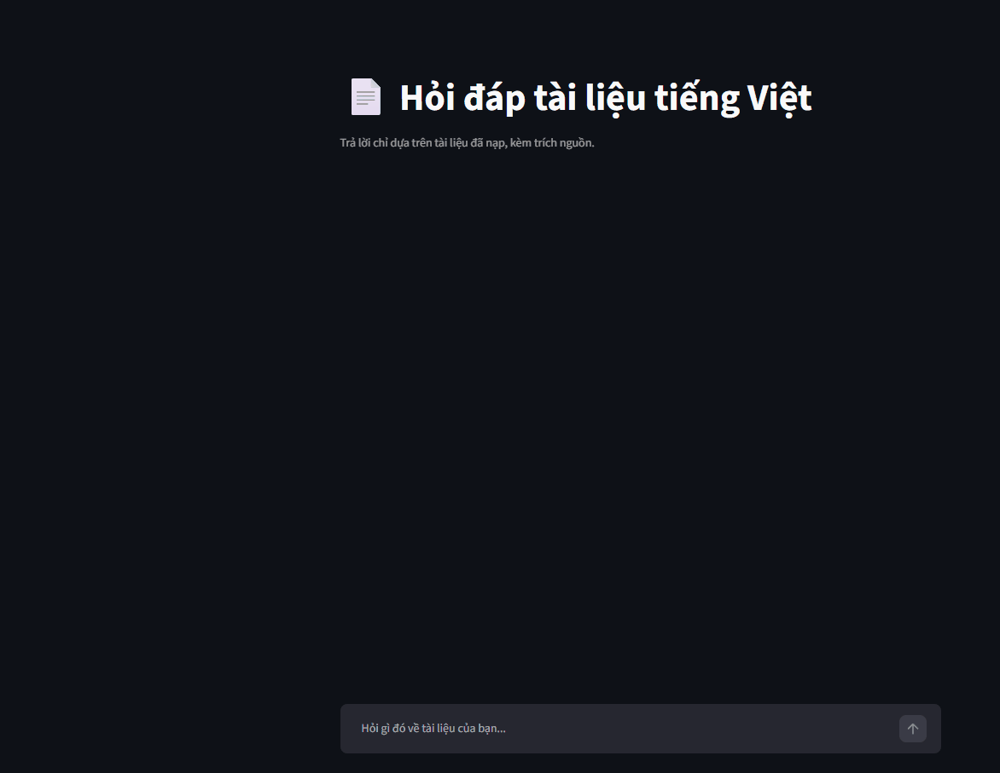
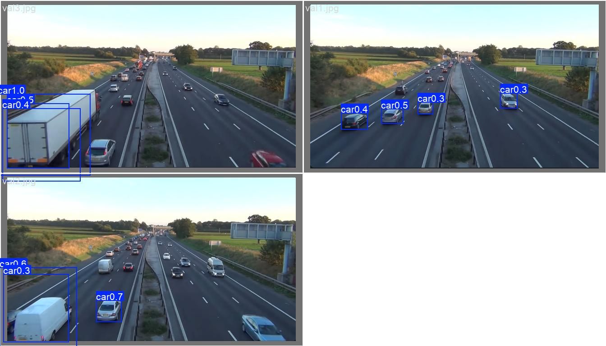

Measure, then decide
I benchmarked three fixes for weak car recall before choosing one, and measured a 10× smaller embedding model before trusting it.
Open to AI / ML internships & graduate roles
> AI Engineer building grounded LLM systems
Bachelor of IT (Artificial Intelligence) undergraduate at Macquarie University, Sydney. I build AI systems that know when they don't know — and I measure before I claim.
I'm an AI undergraduate who likes the unglamorous half of machine learning: the evaluation sets, the failure modes, and the design decisions that make a demo survive contact with real users.
I'm studying a Bachelor of Information Technology majoring in Artificial Intelligence at Macquarie University. Outside class I ship end-to-end projects — from data and models to APIs, containers, CI and a live deployment someone can actually click.
Two threads run through my work. In LLM systems, I care about grounding: retrieval that can say "I couldn't find that" instead of inventing an answer. In computer vision, I care about the step after detection — tracking identity over time so a system can count, not just see.
I'm bilingual in Vietnamese and English, which is why my first RAG system was built for Vietnamese documents — including questions typed without diacritics, the way people actually type in a hurry.
I benchmarked three fixes for weak car recall before choosing one, and measured a 10× smaller embedding model before trusting it.
A system that says "not in the documents" is worth more than one that sounds confident. I test for it explicitly.
APIs, Docker images, CI, live deployments and a README that states known limitations plainly.
Two shipped projects, each with a live demo, tests and honest numbers.
A question-answering chatbot over Vietnamese documents that cites its sources — and refuses to answer when the documents don't contain the answer.
Vector search measures semantic closeness, not whether a passage actually answers the question. Most RAG demos pass "nearby-sounding" chunks to the model and it fabricates an answer from them.
retrieve → grade → generate | no_answer — where Claude Haiku grades every retrieved chunk in parallel before Claude Opus writes an answer.Python⚖ MITUpdated Sep 2026

Real-time traffic detection and tracking for images, video clips and live camera feeds. Every vehicle gets a persistent ID and is counted once as it crosses a virtual line.
Detection answers "what's in this frame". A traffic camera needs "is that the same car I saw a second ago?" — without identity you can't count flow without double-counting.
PythonHTML⚖ AGPL-3.0Updated Sep 2026
Same knobs as the real API: conf, line_y, NIGHT_MODE.
| Model | imgsz | car recall | car mAP50 | all mAP50 | latency |
|---|---|---|---|---|---|
| yolo11n | 640 | 0.174 | 0.241 | 0.642 | 72 ms |
| yolo11n | 1280 | 0.304 | 0.432 | 0.571 | 181 ms |
| yolo11s | 640 | 0.255 | 0.442 | 0.685 | 93 ms |
| yolo11s | 1280 | 0.408 | 0.550 | 0.635 | 343 ms |
Measured on COCO128 restricted to traffic classes, CPU. A floor, not a claim about real road footage — fine-tuning on traffic data is the next lever.
What I'm building right now.
No model.fit(), no pretrained weights. I'm implementing a model end to end — the maths, the training loop and the evaluation — to understand exactly what frameworks do for me, and where things break.
Follow along on GitHub.
A 2 → h → h → 1 network (tanh, sigmoid, cross-entropy), full-batch gradient descent with momentum. About 100 lines of plain JS, no libraries: a taste of what project #3 does at full scale.

A tiny RAG pipeline running in your browser. Ask anything about me: it retrieves, grades and answers with a source, or admits it doesn't know.
No LLM here: BM25-style retrieval plus a keyword-overlap grader over ~30 facts from this page. The real version uses embeddings, Qdrant and Claude — see the project.
Everything here is used in a shipped project. Click any skill to see where.
Macquarie University · Sydney, Australia
Studying the foundations of machine learning, data and software engineering, and applying them in self-directed, production-style projects.
I'm looking for AI / ML engineering internships and graduate opportunities. If you're hiring — or just want to talk RAG, tracking, or evaluation — I'd love to hear from you.
Skins inspired by popular developer websites and editor colour schemes. Dev-site skins also change the layout.